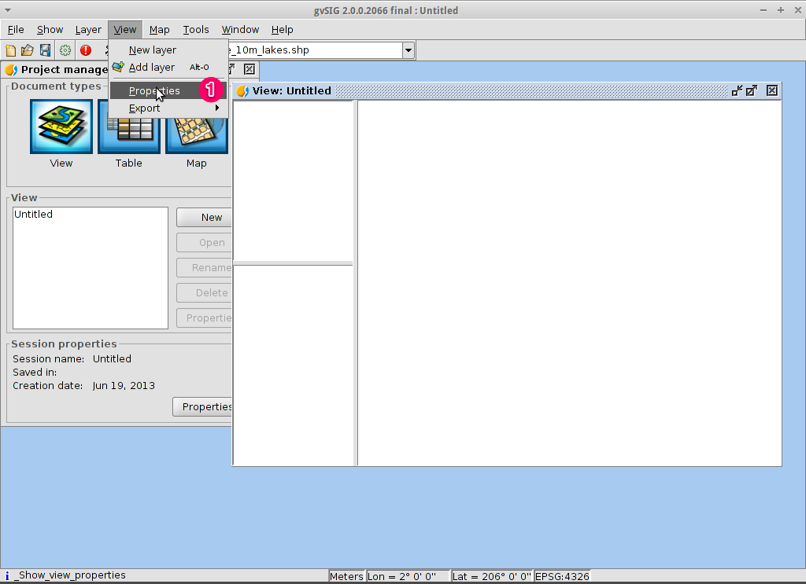

注釈
このプロジェクトはOSGeoLive仮想マシンディスク(VMDK)にのみ含まれています
gvSIG デスクトップクイックスタート¶
gvSIG は、地理情報システム (GIS) デスクトップアプリケーションで、複雑な管理と計画の問題を解決するために、参照されているあらゆる種類の地理情報をキャプチャ、保存、処理、分析、および展開するように設計されています。gvSIGは、ユーザフレンドリなインタフェースと、一般的なベクタ形式とラスタ形式にアクセスできることで知られています。これには、地理情報等を操作するためのさまざまなツール(クエリー、レイアウト作成、ジオプロセシング、ネットワークなど)が用意されており、陸上データの作業するユーザにとってgvSIG を理想的なツールに変えることができます。
目次
注釈
もし、gvSIG のユーザインタフェースが反応しなくなったら、たとえばファイルを開く Alt+f キーを試してみてください。ユーザー・インターフェースは再び動作するはずです。このバグはOSGeoLiveのgvSIGでのみ発生します。通常のgvSIGインストールでは発生しません。
注釈
gvSIG バージョン2.3.1の注意: ラスタファイルをロードするには、ファイルの存在するフォルダに書き込み権限が必要です。そうでない場合、アプリケーションは、(書き込み権限のある)適切なフォルダを選択するよう聞いてきます。 "user" ユーザは、 "data" フォルダに書き込み権限がないため、 それを選択する必要があるときは、きかれたら、たとえば "/home/user" などのユーザが書き込み権限のあるフォルダを指定してください。
gvSIGを開始してビューを作成する¶
デスクトップから を選択します。通常、アプリケーションの起動には約1分かかります。
デフォルトでは、gvSIGは 'View' ドキュメントタイプが選択された空のプロジェクトファイルで開きます。しかし、OSGeoLiveでは、 gvSIG は、デフォルトのプロジェクトで開始するように設定されています。New Project ボタンをクリックして、 を選択してください。入力待ちになったら、最後のプロジェクトを使わない場合は Discard Changes を選択します。
New ボタンをクリックして、ビューを作成します。これは、自動的に開きます。

ビューの投影を定義する¶
を選択します。
Current projection では、 ... ボタンをクリックします。New CRS ダイアログが開きます。
ドロップダウンリストで Type を選択し、EPSGを選択します。
座標参照システムのEPSGコードを入力します。この例では、WGS84 2D 地理投影の EPSG=4326 を使用します。Search ボタンをクリックします。検索インプット欄の下に選択したCRSが一覧表で表示されます。
OK を選択し、 View Properties ダイアログに戻ります。EPSGコードは現在 4326 で、地図の緯経度の単位が度に設定されます。
OK を選択して、 Project Manager に戻ります。
{kind=link}

ビューウィンドウは3つのゾーンで構成されています。
(2)左上のセルには、ビューで使用されているベクタレイヤまたはラスタレイヤのリスト(目次など)が含まれます。
(3) The bottom-left cell displays the extent of the main view over a selected vector file.
(4)右のセルは、ラスタデータとベクタデータがレンダリングされるメイン表示領域です。

ビューにレイヤを追加¶
メインツールバーから Add layer アイコンをクリックして、 Add layer ダイアログを開きます。
Add layer ダイアログで、 Add を選択します。デフォルトで、最初のタブは File です、そのため、ファイルの Open ダイアログが表示されます。
/usr/local/share/data/natural_earth2/ディレクトリをドリルダウンします。図のようにファイルを選択します。
{kind=link}
注釈
By default all formats are shown so we can select both vector and raster files at a time by keeping pressed the CTRL key.
Click on the OK button to return to the Add layer dialog.
Click on the OK button on the Add layer dialog to return to the view.
Configure the view display¶
Click on the Maximize icon for a better viewing of the data.
The size of the Table-of-Contents column can be adjusted using the mouse to help see long file names.
In case the raster layer is on the top it should be moved manually to the bottom.

Zoom into a region¶
By default the Zoom in tool is selected on the main toolbar.
Use the mouse pointer to draw a bounding box around South-east Australia. Do this by selecting the top-left corner of the bounding box, holding down the left-mouse-button, and dragging the bottom-right corner of the bounding box over the selected area. Release the left-mouse button once you have the approximate area defined.

Change how the layers look¶
Make a polygon transparent¶
Select the
ne_10m_admin_1_states_provinces.shplayer using the left-mouse-button and click again with the right-mouse-button.Select the submenu.
The Layer properties dialog box will appear.

Change the symbology of a vector layer¶
Select the Symbols tab at the top of the Layers properties dialog.
Select Choose symbol button so the Symbol selector dialog appears.
Remove the fill symbol and changing the border color¶
Uncheck the Fill color box so the polygons are transparent.
Click on the ... close to Border color:.
Choose white as color.
Click on the OK button to return to the Symbol selector dialog.
Click on the OK button to return to the Layers properties dialog.

Change the labelling of a vector layer¶
Select the Labelling tab at the top of the Layers properties dialog.
Change the text attributes to those shown on the image, then click on the Accept button.

View the result¶
Note that this is a very basic view showing a point, a line and a polygon vector file superimposed over a raster file. 航空写真やデジタル地形モデルをベクタデータの背景として使用したり、異なる形式で保存された他のベクタデータを表示することも簡単です。

Add an overview or locator¶
Select .

Click on the Add layer… button.
Within the Add layer window, click on the Add button.
Select the
HYP_50M_SR_W.tiflayer.Click on the Open button to return to the Add layer window.
Click on the Ok button and close the Configure locator window.

Now we can easily know where the view is located in the world.

Select towns within a region¶
Select the region¶
Select the
ne_10m_admin_1_states_provinces.shplayer using the left-mouse-button.Select the Select by point icon in the main toolbar.
Click the polygon representing the State of New South Wales. The polygon will go yellow or some other colour depending on your user preferences.

Open the Selection by layer tool¶
Select the
ne_10m_populated_places.shplayer using the left-mouse-button.Select to open the Selection by Layer dialog

Select the towns contained within a region¶
Change the first selection criteria using the dropdown boxes on the left-hand side of the Selection by Layer dialog as shown in the picture.
Change the second selection criteria as shown in the picture.
Click the New set button to select towns within the selected polygon.
Select the Cancel button in the Selection by Layer dialog to return to the view.

Deselect the polygon so you can see what has happened¶
Select the
ne_10m_admin_1_states_provinces.shplayer using the left-mouse-button.Select the 'Clear selection' icon in the main toolbar.
You can now see that only those towns within New South Wales are selected.

Export selected features to a new shapefile¶
Select the output file format¶
Select the
ne_10m_populated_places.shplayer using the left-mouse-button.Select to start the export.
Select Shape Format.
Click on Next.

Select the output file name¶
Choose a folder and type the file name.
Click on Open and then on Next.

Reference system¶
Choose the option Original (EPSG:4326) in order to keep the reference system of the view.
Click on Next.
Export options¶
Choose the option Selected features in order to export only the towns of New South Wales.
Click on Export.

View the result¶
The new layer has been added to the view.
In order to check that the export was ok set the original file as invisible. Only the towns of New South Wales should be shown.

新規マップの作成¶
Select the Map document type in the Project Manager.
Click on the New button to create a map.
A new window is shown, where you can select the view to insert on the Map. Select the only view that you have and press Accept.
The map will appear with the view selected.
Work with the map¶
Additional elements like a scale and north arrow can be added to the map using the icons in the main toolbar or with the submenus in the menu.
The map can be printed or exported to PDF or Postscript for incorporation into other works.
Select the Close window icon to return to the Project manager

Save your project or exiting gvSIG¶
Projects can be saved for use later by using the menu option, or
Projects can be exited or closed by using the menu option.
{kind=link}
Install an add-on¶
Open the add-ons manager¶
Select . After a while, the Install package window will appear.
Within the Install package window, select the option Installation from URL.
Choose the repo URL shown in the picture.
Click on the Next button.

Find an add-on¶
At the add-ons manager we can find plugins and symbol libraries.
Type 'Forestry' in the Fast filter text box.
Check the add-on called Symbols: Forestry (it's a symbol library).
Click on Next.
{kind=link}
Finish the installation¶
Click on Start downloading.
Then click on Next.
Finally click on Finish.
Although the new message indicates that a restart is needed, for symbol libraries it's not necessary. We only have to restart when we install plugins.
Add an OpenStreetMap layer¶
Now we are going to add OpenStreetMap cartography. Within a new view, in EPSG 3857, click on the Add layer… button.
Choose the OSM tab.
Select 'Mapnik' from the available layers.
Click on Ok.

View the result¶
A new layer has been added to the view. Just doing zoom over a region we could see the detailed Open Street Map data.


Add a WMTS layer¶
WMTS is an evolution of WMS OGC standard based on tile management.
Select a server¶
Within a view, click on the Add layer… button.
Choose the WMTS tab.
Choose the URL shown in the picture.
Click on Connect.
Click on Next.

Select one of the available layers¶
Select one of the available layers (e.g. bluemarble)
Click on Add.
Click on Next.

Select image format and reference system¶
Select image/jpeg as image format.
Select EPSG:4326 (notice that the view must have the same SRS. If not then cancel, change it and start again).
Click on Accept.
{kind=link}
A new layer has been added to the view.